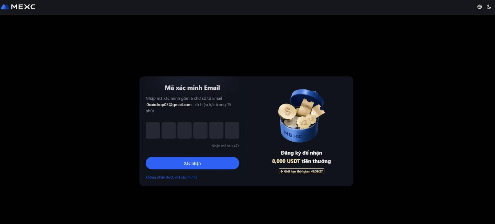

🌍 Sàn Giao Dịch Tiền Mã Hoá là gì?
Sàn giao dịch tiền mã hoá hay còn gọi là Sàn giao dịch tiền điện tử là một doanh nghiệp cho phép khách hàng thực hiện giao dịch tiền điện tử hoặc tiền kỹ thuật số để đổi lấy các tài sản khác, chẳng hạn như tiền định danh thông thường( VND , USD,..) , loại tiền tệ của quốc gia mà cá nhân thuộc nước đó đang sử dụng hoặc các loại tiền kỹ thuật số khác.
Các sàn giao dịch có thể chấp nhận thanh toán bằng thẻ tín dụng, chuyển khoản ngân hàng hoặc các hình thức thanh toán khác để đổi lấy tiền kỹ thuật số hoặc tiền điện tử và ngược lại. Đồng thời là một nền tảng trực tuyến cho phép người dùng mua, bán, trao đổi các loại tiền điện tử như Bitcoin, Ethereum và các tài sản kỹ thuật số khác, hoạt động như một trung gian kết nối người mua và người bán. Và đảm bảo quyền lợi của cả hai bên bán và bên mua. Các sàn này có thể được phân loại thành sàn tập trung (CEX), sàn phi tập trung (DEX), và sàn P2P (ngang hàng), mỗi loại có những đặc điểm riêng về quản lý, bảo mật và quyền kiểm soát tài sản của người dùng.
Chức năng chính của sàn giao dịch tiền điện tử:
Kết nối người mua và người bán:
Sàn giao dịch là nơi tạo ra thị trường, giúp người có nhu cầu mua và người muốn bán tiền điện tử gặp nhau và thực hiện giao dịch. Chúng xử lý các lệnh giao dịch, khớp lệnh mua và bán, và ghi lại các giao dịch trên blockchain (đối với sàn phi tập trung) hoặc trong hệ thống của sàn.
Các loại sàn giao dịch tiền điện tử phổ biến:
Sàn tập trung (CEX - Centralized Exchange):
- Đặc điểm: Do một công ty hoặc tổ chức điều hành, có giao diện thân thiện, dễ sử dụng, tính thanh khoản cao và hỗ trợ nạp/rút tiền pháp định (tiền truyền thống).
- Ví dụ: Mexc, Binance..
Tại sao cần chọn sàn giao dịch uy tín?
Việc lựa chọn một sàn giao dịch tiền điện tử đáng tin cậy là rất quan trọng để bảo vệ tài sản của nhà đầu tư khỏi các rủi ro mất mát và lừa đảo, vì thị trường này có nhiều biến động và không phải sàn nào cũng đảm bảo an toàn cho nhà đầu tư. Mặc dù có nhiều loại sàn và ví khác nhau nhưng chúng tôi chỉ phân tích Sàn tập trung (CEX - Centralized Exchange) uy tín , phổ biến, có mức độ an toàn cao .
🌍 MEXC-SÀN GIAO DỊCH TIỀN ĐIỆN TỬ UY TÍN TRÊN THẾ GIỚI HIỆN NAY
MEXC (hay MEXC GLOBAL) là một sàn giao dịch tiền mã hóa toàn cầu, được thành lập vào năm 2018 tại Singapore. Sàn cung cấp nền tảng giao dịch cho nhiều loại tài sản kỹ thuật số như Bitcoin, Ethereum và hàng nghìn altcoin khác cùng với các dịch vụ như spot, futures và nhiều sản phẩm tài chính khác.
Với khát vọng vươn tầm trở thành sàn giao dịch tiền điện tử hàng đầu thế giới, MEXC không ngừng mở rộng phạm vi hoạt động, hiện diện tại hơn 170 quốc gia và hỗ trợ nhiều ngôn ngữ. Cùng với đó, sàn cung cấp hơn 2900 cặp giao dịch spot và 700 cặp giao dịch futures, mang lại sự đa dạng cho người dùng.
MEXC hiện nằm trong top 10 sàn giao dịch hàng đầu với khối lượng giao dịch ấn tượng, đạt khoảng 4 tỷ USD mỗi ngày trên thị trường spot và lên đến 24 tỷ USD đối với giao dịch futures.
Các ưu điểm của sàn MEXC
- Đa dạng sản phẩm và dịch vụ: MEXC cung cấp nhiều cặp giao dịch (spot và futures) cùng các sản phẩm hữu ích như quỹ ETF, NFT Index, và Launchpool, giúp người dùng có nhiều lựa chọn đầu tư.
- Phí giao dịch cạnh tranh: MEXC là một trong những sàn có phí giao dịch rẻ nhất hiện nay, với phí Maker 0% và phí Taker chỉ 0.05% (Spot), giúp bạn tiết kiệm chi phí.
- Bảo mật và hiệu suất vượt trội: Sàn áp dụng các biện pháp bảo mật tiên tiến như xác thực hai yếu tố (2FA) và lưu trữ tài sản trong ví lạnh. Hệ thống có khả năng xử lý 1.400.000 lệnh mỗi giây, đảm bảo giao dịch diễn ra nhanh chóng.
- Hỗ trợ khách hàng chuyên nghiệp: Đội ngũ hỗ trợ 24/7 với nhiều ngôn ngữ, sẵn sàng giải đáp mọi thắc mắc của bạn.
- Thân thiện với người mới: Giao diện dễ sử dụng, trải nghiệm mượt mà trên các thiết bị di động, và có nhiều chính sách ưu đãi dành cho người dùng mới.
Đánh giá
Với bề dày kinh nghiệm lâu năm trong nghành Crypto, sự phổ biến toàn cầu , tiềm lực tài chính hùng mạnh. Cộng thêm lượng khách hàng đông đảo. Đồng thời với công nghệ bảo mật cao, giao diện dễ sử dụng và đặc biệt có nhiều ưu đãi cho các khách hàng mới. Với kinh nghiệm sử dụng nhiều sàn giao dịch khác nhau, Chúng tôi đánh giá rất cao Sàn MEXC trên tất cả các tiêu chí đều phù hợp . chúng tôi đánh giá là sàn Uy tín, tốt nhất hiện nay dành cho người mới bắt đầu. Đánh giá riêng của chúng tôi là **9,5 điểm / 10 điểm**.
Sàn Binance: Đánh giá nhanh
Binance là sàn giao dịch lớn nhất thế giới, nhưng có thể phức tạp với người mới.
- Giao diện và tính năng phức tạp, nhiều chức năng không cần thiết cho người mới.
- Các vấn đề pháp lý tại một số quốc gia có thể gây lo ngại.
- Ít chính sách ưu đãi cho người dùng mới so với MEXC.
Chúng tôi đánh giá Binance 8/10 điểm, và khuyến nghị MEXC là lựa chọn tốt hơn cho người mới.
Do đó chúng tôi đang sử dụng MEXC, và lựa chọn MEXC làm đối tác lâu dài để phát triển và trao niềm tin. Còn bạn thì sao? Bây giờ Chúng ta hãy cùng tìm hiểu cách tạo Tài Khoản trên Sàn MEXC, Xác Minh danh tính , Và cài đặt bảo mật cho tài khoản.Let go..
Hướng Dẫn Sử dụng sàn MEXC
Bước 1: Tạo tài khoản
Truy cập vào Trang Web đăng ký của MEXC. Bạn có thể sử dụng số điện thoại hoặc email để đăng ký. Hãy chắc chắn rằng bạn nhập đúng thông tin và tạo một mật khẩu mạnh. Mật khẩu mạnh hợp lệ phải gồm Chữ cái IN HOA, chữ cái thường, số và ký tự đặc biệt.

Sau khi đã nhập Email hoặc Số Điện thoại của bạn, có bước xác minh bạn không phải là robot, hãy chọn theo thứ tự yêu cầu. Sau đó Hãy Nhấn vào nút xanh đăng ký để tạo tài khoản.
Bước 2: Xác minh Email/Số điện thoại
Sau khi điền thông tin, một mã xác minh sẽ được gửi đến email hoặc số điện thoại của bạn. Hãy kiểm tra hộp thư/tin nhắn và nhập mã đó vào trang web để hoàn tất bước đăng ký tài khoản.
Bạn đã hoàn thành việc tạo tài khoản Giao dịch trên Mexc. Tuy nhiên, để đảm bảo việc bảo mật cao hơn và xác minh bạn là chủ tài khoản duy nhất. Bạn hãy tiến hành hoàn tất bước KYC bên dưới
Bước 3: Xác minh danh tính (KYC)
Bạn có thể xác minh tài khoản MEXC bằng cách sử dụng các giấy tờ tùy thân như Căn cước công dân. Hãy xem video dưới đây để biết các bước thực hiện chi tiết:
Bạn đã hoàn thành việc Xác Minh Danh Tính cơ bản. Việc này cần chờ bên MEXC xét duyệt trong 24h .Đến đây bạn đã hoàn toàn có thể giao dịch trên sàn Mexc.
Tuy nhiên, để đảm bảo tài khoản bạn an toàn khi sử dụng lâu dài, tránh hacker lấy cắp tài khoản. Đề nghị bạn nên hoàn thành Bước bảo mật 2FA dưới.
Bước 4: Cài đặt bảo mật hai yếu tố (2FA)
Để bảo vệ tài khoản khỏi các truy cập trái phép, bạn nên bật xác thực 2FA. Bạn có thể sử dụng Google Authenticator. Sau khi cài đặt, mỗi khi đăng nhập hoặc thực hiện giao dịch, bạn sẽ cần nhập mã từ ứng dụng này.